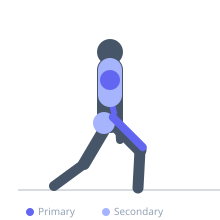
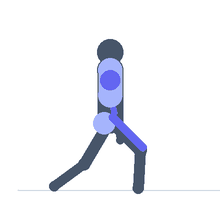

Exercise guide / Split Jerk
Split Jerk
The split jerk is the most commonly used jerk technique in Olympic weightlifting competition, in which the athlete drives the bar overhead from the front rack position and catches it with one foot forward and one foot back in a lunge-like split stance. The split position allows a lower catch height and a more stable bilateral base, making it the preferred technique for maximum loads. It requires exceptional bar drive from the legs, quick footwork, and stable overhead positioning.
Primary muscles
rectus femoris
vastus lateralis
deltoid anterior
triceps long head
Secondary muscles
gluteus maximus
deltoid lateral
trapezius upper
Stabilizers
infraspinatus
supraspinatus
transverse abdominis
Equipment
Standard Barbell
Weight Plates
Optional
Power Rack (Squat Cage)


Starting position
- Bar in the front rack position on the shoulders, elbows slightly in front of the bar, feet hip-width apart, torso vertical.
Setup
- Received from a clean or taken from the rack. Establish a stable front rack before initiating the dip.
Steps
- Step 1: Stand with bar in front rack, torso vertical.
- Step 2: Dip straight down — bend the knees 10–15 cm while keeping the torso perfectly vertical.
- Step 3: Drive explosively upward, pressing the bar off the shoulders and pressing overhead.
- Step 4: Simultaneously split the feet — step one foot forward into a lunge, one foot back.
- Step 5: Lock out the elbows with the bar over the base of the neck. Recover by stepping front foot back, then back foot forward. Stand to full extension.
Coaching cues
- Dip straight — not forward
- Drive the bar up — not forward
- Split wide and lock out fast
Breathing
- Deep breath and brace before the dip. Exhale after standing from the split.
Range of motion
- Full overhead lockout. Front shin vertical. Back knee slightly bent. Recover to full standing before lowering the bar.
Tempo
- Explosive dip and drive. Fast split. Stable catch before recovery.
Common mistakes
- Dipping forward (the torso must remain vertical throughout the dip)
- Not splitting the feet far enough — inadequate depth of split
- Catching with bent elbows — the lockout must be instantaneous
Safety
- Practice the dip-drive and split footwork with an empty bar before loading.
- The split stance must be wide enough for a stable catch — a narrow split is a common failure point.
Training
- strength: 1–3 reps
- power: 1–5 reps
- strength: 3–8 sets
- power: 4–8 sets
- Rest: {'strength': 240, 'power': 180}